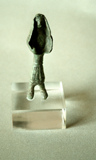
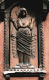
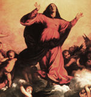

La Madonna della Misericordia |
In the Campo Santa Margherita, on the wall of the Confraternity of the Leatherworkers, a frieze depicts the Virgin Mary enveloping dwarf-sized worshippers with a voluminous protective mantle.
In the sixth century BC, a late Iron Age tribe called the Venetii worshipped a female deity called Reitia, the Goddess of all living things. Hundreds of little bronze effigies of Reitia have been excavated at Este, near Padua. Reitia always wears a mantle over her head. Today, on a wall in the Campo San Lucca in Venice, a medieval, iconic Madonna peers out of her vulva-like headcovering in much the same way as does her ancestress Reitia.
In ancient Greece, every year the priestesses of Athena wove an elaborate story cloth and sewed it into a robe called a peplos. In a ceremony they presented the peplos to the goddess, draping it over her fifty-foot-high statue on the Acropolis.
In medieval times Venetians painted and sculpted La Madonna della Misericordia, (Mary with the Enveloping Mantle), all over the inside and outside of churches and confraternities. The Virgin's billowing cloak creates a dark, hollow space promising warmth and protection. There is a strong link in Venetian art and culture between a woman's flowing robes and her suggested spiritual and psychological powers.
|
|
|  Reitia, Sixth Century BC |
 San Lucca Altar |
 Titian: The Assumption of the Virgin |
All images on these pages are copyright © 1999 by Holly Smith Pedlosky
To learn more, send e-mail to Holly Smith Pedlosky
|
Would you like to meet some more Venetian housewives? |
Would you like to see some more Laundry? |
Would you like to find out more about laundry, cloth, and draped fabric in Venetian art? |